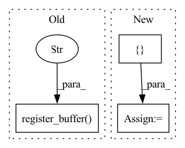

Pattern ID :40005
Before Change
self.stride[0] - len(state_buffer) - 1 + self.padding[0]
)
if not hasattr(self, "state_buffer"):
self.register_buffer("state_buffer" , state_buffer, persistent=False)
return state_buffer, state_index, stride_index
def clean_state(self):
if hasattr(self, "state_buffer"):After Change
first_output: Tensor,
) -> State:
padding = self.make_padding(first_output)
repeat_shape = [ self.kernel_size[0] - 1 = padding.repeat(repeat_shape)
state_index = 0
stride_index = self.stride[0] - len(state_buffer) - 1 + self.padding[0]
In pattern: SUPERPATTERN
Frequency: 3
Non-data size: 3
Instances Fragment ID: 113726684
Project Name: lukashedegaard/continual-inference
Commit Name: 1e6964a31874287527720453b1c9216ddedd5a01
Time: 2022-11-29
Author: lh@eng.au.dk
File Name: continual/conv.py
M Class Name: _ConvCoNd
N Class Name: _ConvCoNd
M Method Name: init_state(2)
N Method Name: init_state(2)
M Parent Class: _ConvNd,CoModule
N Parent Class: _ConvNd,CoModule
M File Name: continual/conv.py
N File Name: continual/conv.py
M Start Line: 125
M End Line: 135
N Start Line: 133
N End Line: 138
Before Change
// initializing partition buffers
// GPT2Model/Block[9]/Attention[attn]/Tensor[bias]
self.register_buffer("b_0" ,tensors["GPT2Model/Block[9]/Attention[attn]/Tensor[bias]"])
// GPT2Model/Block[10]/Attention[attn]/Tensor[bias]
self.register_buffer("b_1",tensors["GPT2Model/Block[10]/Attention[attn]/Tensor[bias]"])
// GPT2Model/Block[11]/Attention[attn]/Tensor[bias]
self.register_buffer("b_2",tensors["GPT2Model/Block[11]/Attention[attn]/Tensor[bias]"])After Change
// initializing partition parameters
self.device = torch.device("cuda:3")
self.lookup = { "l_0": "transformer.10.attn.attn_dropout",
"l_1": "transformer.10.attn.c_proj",
"l_2": "transformer.10.attn.resid_dropout",
"l_3": "transformer.10.ln_2",
"l_4": "transformer.10.mlp.c_fc",
"l_5": "transformer.10.mlp.c_proj",
"l_6": "transformer.10.mlp.dropout",
"l_7": "transformer.11.ln_1",
"l_8": "transformer.11.attn.c_attn",
"l_9": "transformer.11.attn.attn_dropout",
"l_10": "transformer.11.attn.c_proj",
"l_11": "transformer.11.attn.resid_dropout",
"l_12": "transformer.11.ln_2",
"l_13": "transformer.11.mlp.c_fc",
"l_14": "transformer.11.mlp.c_proj",
"l_15": "transformer.11.mlp.dropout",
"l_16": "transformer.ln_f",
"l_17": "lm_head",
"b_0": "transformer.10.attn.bias",
"b_1": "transformer.11.attn.bias"}
def forward(self, x0, x1, x2):
// GPT2LMHeadModel/GPT2Model[transformer]/Block[10]/Attention[attn]/Dropout[attn_dropout] <=> self.l_0
// GPT2LMHeadModel/GPT2Model[transformer]/Block[10]/Attention[attn]/Conv1D[c_proj] <=> self.l_1 Fragment ID: 113726683
Project Name: saareliad/ftpipe
Commit Name: 9ddf98456ca57cac3a4a982fc519c5a71642dc25
Time: 2020-03-10
Author: saareliad@campus.technion.ac.il
File Name: models/partitioned/gpt2.py
M Class Name: Partition3
N Class Name: Partition3
M Method Name: __init__(3)
N Method Name: __init__(3)
M Parent Class: nn.Module
N Parent Class: nn.Module
M File Name: models/partitioned/gpt2.py
N File Name: models/partitioned/gpt2.py
M Start Line: 1094
M End Line: 1156
N Start Line: 1094
N End Line: 1113
Before Change
super().__init__(synthglobals, **kwargs)
// Create and save a buffer of sample points
self.register_buffer("range" , torch.arange(self.buffer_size))
def _forward(self, mod_signal: Signal) -> Signal:
Must be implemented in deriving classesAfter Change
exponent: T = T(2.718281828), // e
**kwargs: Dict[str, T],
):
self.lfo_types = [ "sin", "tri", "saw", "rsaw", "sqr" Fragment ID: 113726682
Project Name: turian/torchsynth
Commit Name: b24c7d77517daac71b420400457a0450afd99a3b
Time: 2021-03-22
Author: jordieshier@gmail.com
File Name: torchsynth/module.py
M Class Name: LFO
N Class Name: LFO
M Method Name: __init__(3)
N Method Name: __init__(2)
M Parent Class: VCO
N Parent Class: VCO
M File Name: torchsynth/module.py
N File Name: torchsynth/module.py
M Start Line: 546
M End Line: 546
N Start Line: 541
N End Line: 556